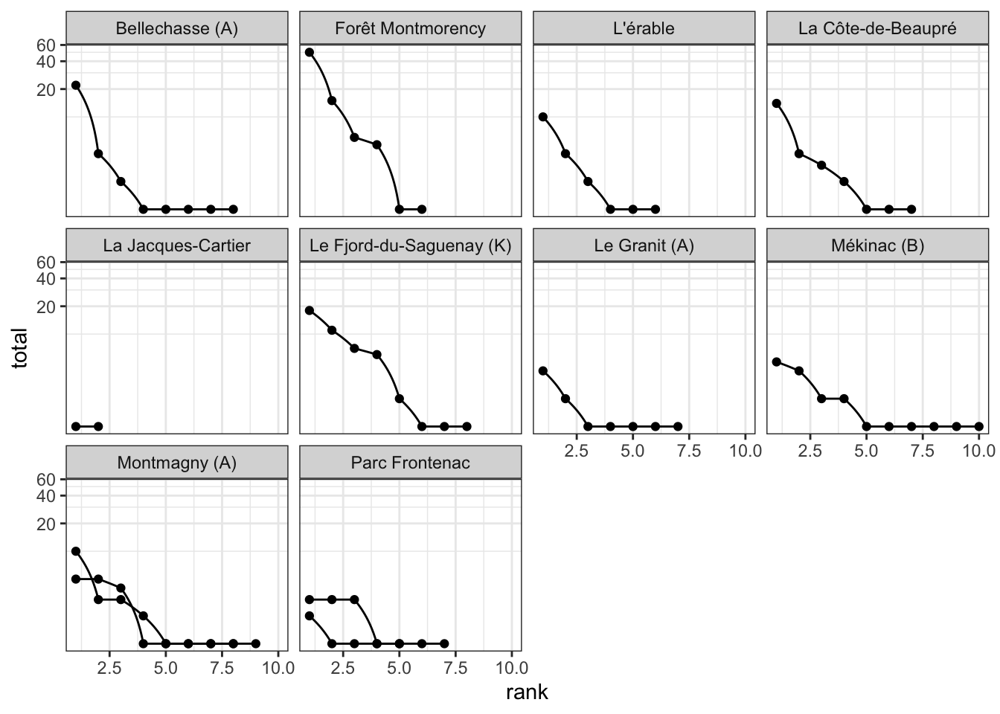

4 Odonate communities
# confirm that the only variable recorded here is "abondance"
odonates$var %>% unique %>% {stopifnot(. == "abondance")}
odonates %>%
glimpse %>%
{all.equal(.$count, .$val)}## Rows: 151
## Columns: 8
## $ cell_code <chr> "135_104", "135_104", "135_104", "135_104", "135_104", "135…
## $ site_code <chr> "135_104_H01", "135_104_H01", "135_104_H01", "135_104_H01",…
## $ date_obs <date> 2016-06-23, 2016-06-23, 2016-06-23, 2016-06-23, 2016-06-23…
## $ type <chr> "odonates", "odonates", "odonates", "odonates", "odonates",…
## $ taxa <chr> "Leucorrhinia hudsonica", "Nehalennia gracilis", "Gomphus s…
## $ var <chr> "abondance", "abondance", "abondance", "abondance", "abonda…
## $ val <dbl> 2, 1, 1, 1, 1, 1, 1, 2, 1, 1, 2, 4, 1, 10, 1, 30, 5, 20, 5,…
## $ count <dbl> 2, 1, 1, 1, 1, 1, 1, 2, 1, 1, 2, 4, 1, 10, 1, 30, 5, 20, 5,…## [1] TRUE## are sites nested in cells?
odonates %>%
select(site_code, cell_code) %>% distinct %>%
group_by(cell_code) %>% tally## # A tibble: 10 x 2
## cell_code n
## <chr> <int>
## 1 132_116 1
## 2 135_104 1
## 3 137_107 1
## 4 137_111 1
## 5 139_103 1
## 6 139_111 1
## 7 141_108 1
## 8 142_111 2
## 9 145_102 2
## 10 148_101 1rank_abundance <- odonates %>%
left_join(select(cells, cell_code, name)) %>%
group_by(cell_code, name, site_code, taxa) %>%
summarize(total = sum(count)) %>%
mutate(rank = row_number(desc(total)))## Joining, by = "cell_code"## `summarise()` regrouping output by 'cell_code', 'name', 'site_code' (override with `.groups` argument)rank_abundance %>%
ggplot(aes(x = rank, y = total, group = site_code)) +
geom_point() +
geom_line() +
facet_wrap(~name) +
coord_trans(y = "log") +
theme_bw()
4.1 Questions
Some sites appear to count individuals, not species? why is that?
odonates %>%
left_join(select(cells, cell_code, name)) %>%
filter(name %>% stringr::str_detect("Parc|-de-")) %>%
select(name, site_code, taxa, val) %>% knitr::kable(.)## Joining, by = "cell_code"| name | site_code | taxa | val |
|---|---|---|---|
| La Côte-de-Beaupré | 139_111_H01 | Leucorrhinia glacialis | 1 |
| La Côte-de-Beaupré | 139_111_H01 | Ladona julia | 1 |
| La Côte-de-Beaupré | 139_111_H01 | Ladona julia | 1 |
| La Côte-de-Beaupré | 139_111_H01 | Ladona julia | 1 |
| La Côte-de-Beaupré | 139_111_H01 | Ladona julia | 1 |
| La Côte-de-Beaupré | 139_111_H01 | Ladona julia | 1 |
| La Côte-de-Beaupré | 139_111_H01 | Ladona julia | 1 |
| La Côte-de-Beaupré | 139_111_H01 | Ladona julia | 1 |
| La Côte-de-Beaupré | 139_111_H01 | Ladona julia | 1 |
| La Côte-de-Beaupré | 139_111_H01 | Ladona julia | 1 |
| La Côte-de-Beaupré | 139_111_H01 | Ladona julia | 1 |
| La Côte-de-Beaupré | 139_111_H01 | Enallagma ebrium | 1 |
| La Côte-de-Beaupré | 139_111_H01 | Ladona julia | 1 |
| La Côte-de-Beaupré | 139_111_H01 | Nehalennia irene | 1 |
| La Côte-de-Beaupré | 139_111_H01 | Leucorrhinia proxima | 1 |
| La Côte-de-Beaupré | 139_111_H01 | Dorocordulia libera | 1 |
| La Côte-de-Beaupré | 139_111_H01 | Enallagma ebrium | 1 |
| La Côte-de-Beaupré | 139_111_H01 | Ladona julia | 1 |
| La Côte-de-Beaupré | 139_111_H01 | Ladona julia | 1 |
| La Côte-de-Beaupré | 139_111_H01 | Somatochlora franklini | 1 |
| La Côte-de-Beaupré | 139_111_H01 | Enallagma ebrium | 1 |
| La Côte-de-Beaupré | 139_111_H01 | Ladona julia | 1 |
| La Côte-de-Beaupré | 139_111_H01 | Enallagma ebrium | 1 |
| La Côte-de-Beaupré | 139_111_H01 | Leucorrhinia proxima | 1 |
| La Côte-de-Beaupré | 139_111_H01 | Leucorrhinia proxima | 1 |
| La Côte-de-Beaupré | 139_111_H01 | Nehalennia irene | 1 |
| Parc Frontenac | 145_102_H01 | Nehalennia gracilis | 1 |
| Parc Frontenac | 145_102_H01 | Leucorrhinia proxima | 1 |
| Parc Frontenac | 145_102_H01 | Nannothemis bella | 1 |
| Parc Frontenac | 145_102_H01 | Nannothemis bella | 1 |
| Parc Frontenac | 145_102_H01 | Nehalennia gracilis | 1 |
| Parc Frontenac | 145_102_H01 | Nannothemis bella | 1 |
| Parc Frontenac | 145_102_H01 | Nehalennia irene | 1 |
| Parc Frontenac | 145_102_H01 | Nehalennia irene | 1 |
| Parc Frontenac | 145_102_H01 | Nehalennia gracilis | 1 |
| Parc Frontenac | 145_102_H01 | Enallagma boreale | 1 |
| Parc Frontenac | 145_102_H01 | Leucorrhinia patricia | 1 |
| Parc Frontenac | 145_102_H01 | Nehalennia irene | 1 |
| Parc Frontenac | 145_102_H01 | Leucorrhinia glacialis | 1 |
| Parc Frontenac | 145_102_H02 | Nehalennia irene | 1 |
| Parc Frontenac | 145_102_H02 | Celithemis elisa | 1 |
| Parc Frontenac | 145_102_H02 | Nehalennia irene | 1 |
| Parc Frontenac | 145_102_H02 | Leucorrhinia proxima | 1 |
| Parc Frontenac | 145_102_H02 | Ischnura posita | 1 |
| Parc Frontenac | 145_102_H02 | Enallagma ebrium | 1 |